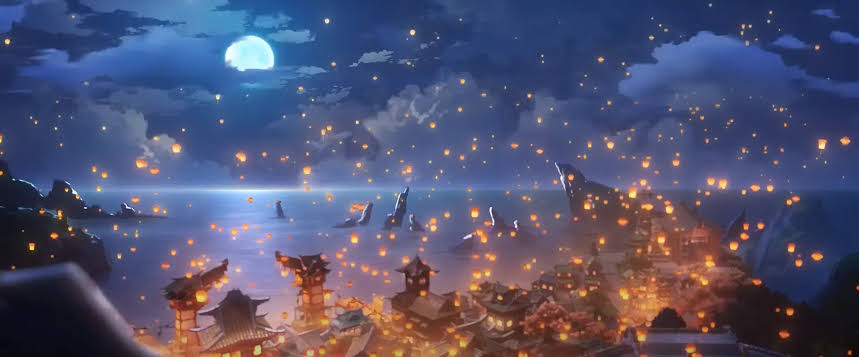
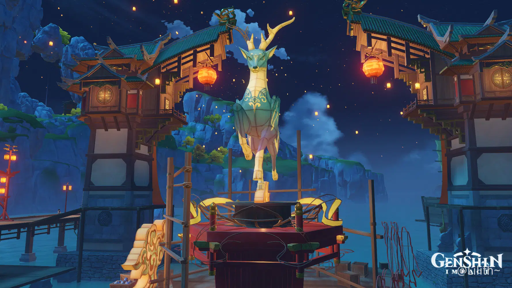
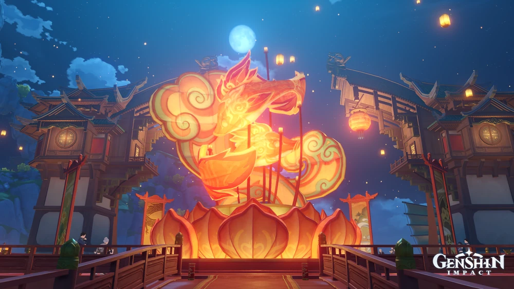
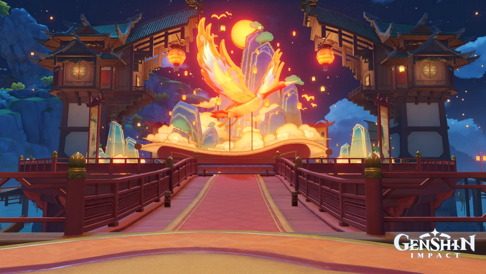
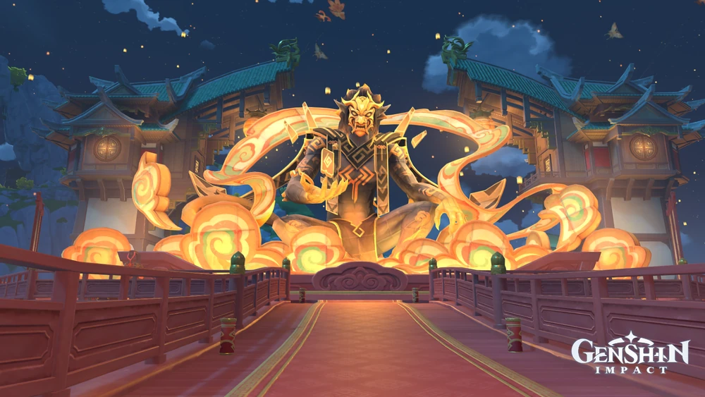
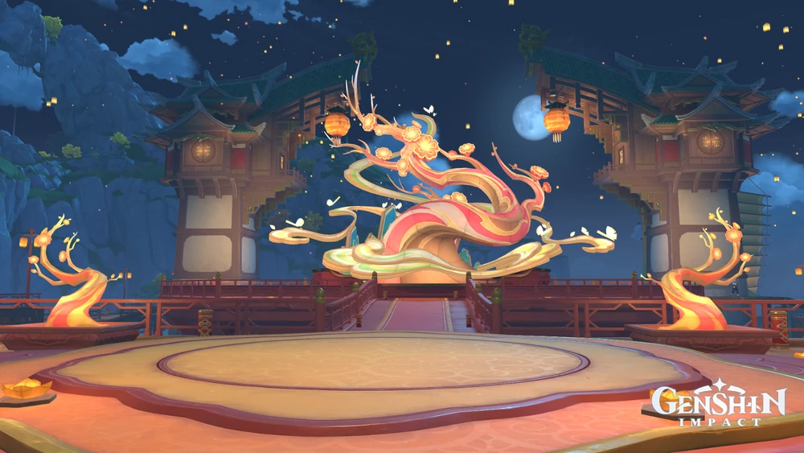
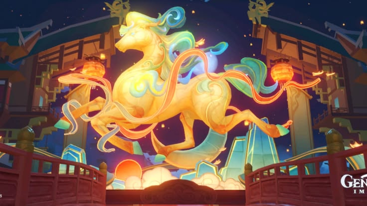

O Ritual de Lanternas é um festival de Liyue celebrado na primeira lua cheia do ano e dura cinco dias. Diz-se que é o maior dos festivais de Liyue.
Todos os anos, um herói caído da história de Liyue é selecionado como tema da Lanterna Mingxiao do Ritual de Lanternas; uma lanterna enorme construída com materiais doados por cidadãos e visitantes.
Originalmente, as pessoas começaram a soltar lanternas como forma de lembrar os soldados do caminho de volta para casa e nunca se perder de vista. Depois que a Guerra dos Arcontes terminou, esse habito tornou-se uma maneira de comemorar aqueles que sacrificaram suas vidas durante a guerra e, eventualmente, evoluiu para um festival.
O Ritual de Lanternas coincide com uma das maiores explosões de poder dos deuses derrotados na Guerra dos Arcontes, contra a qual Xiao tem que lutar durante a duração do festival.
A Lanterna Mingxiao é uma grande lanterna construída pelos cidadãos e visitantes de Liyue. Seu tamanho depende do maior pedaço de Plaustrite encontrado no ano anterior, e seu design é baseado na forma de um dos adepti que morreram para proteger Liyue.
| Lanterna Mingxiao | Símbolo | Homenageado |
|---|---|---|
 |
Cervo | Mestre dos Céus Transcendentes |
 |
Peixe Gêmeos | A harmonia entre os adeptis e os humanos |
 |
Garça | Observador do Oceano |
 |
Yaksha | Menogias |
 |
Árvore | Tao Dou |
 |
Cavalo | Zibai |